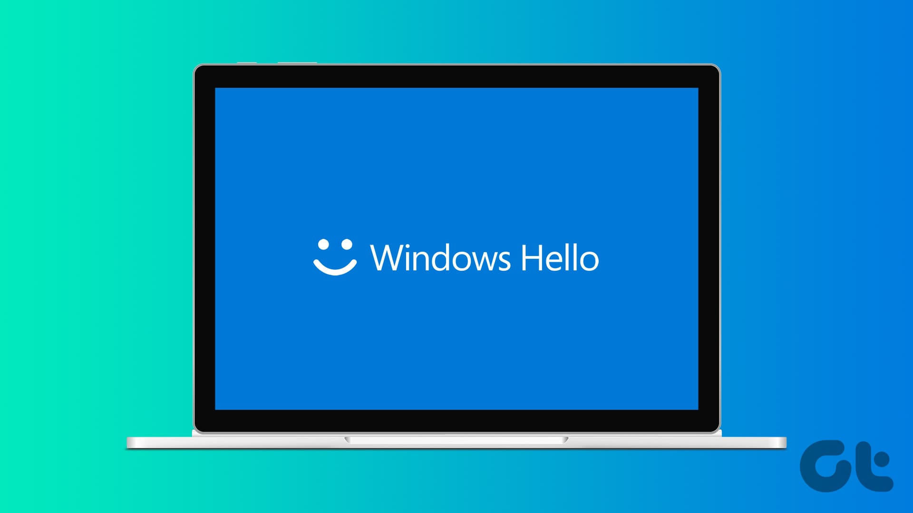
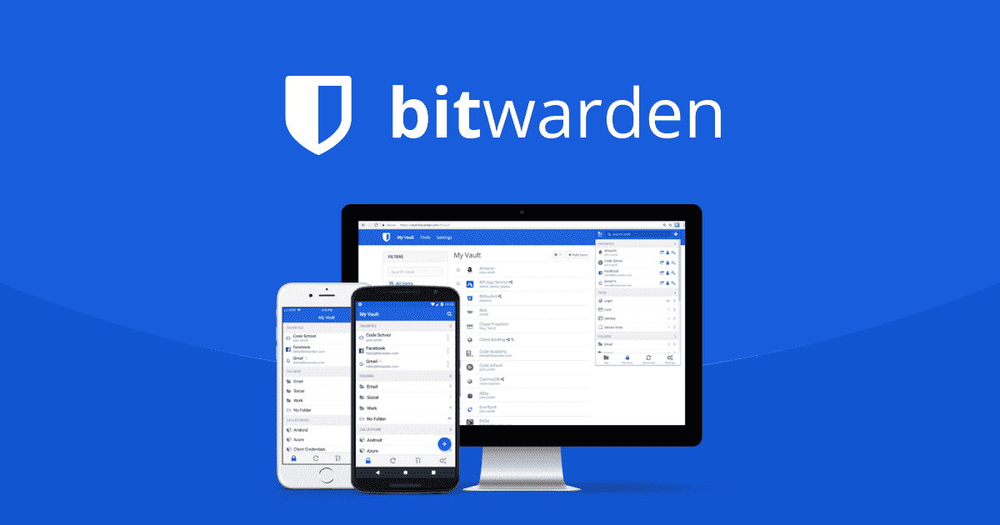

สแกนนิ้วเดียวจบ ปลอดภัยกว่าเดิม 100% มาตรฐาน FIDO2 (Fast Identity Online) & WebAuthn (Web Authentication)
พร้อมเทียบ 3 เครื่องมือตัวท็อป


👉 กดปุ่ม "ถัดไป" หรือลูกศรขวาเพื่อเริ่ม
ตัดระบบกรอกรหัสผ่านทิ้ง ใช้ Cryptography (การเข้ารหัสลับ) แทนที่ทั้งหมด
เก็บใน TPM (Trusted Platform Module: ชิปความปลอดภัยบนเมนบอร์ด) หรือ Password Manager ปลดล็อกด้วยสแกนนิ้ว/ใบหน้า ไม่เคยส่งออกไปไหนเด็ดขาด
เซิร์ฟเวอร์เก็บเฉพาะกุญแจไข ต่อให้เซิร์ฟเวอร์โดนแฮก แฮกเกอร์ก็ไม่ได้รหัสผ่านเราไป
เปรียบเทียบจุดแข็ง & ข้อจำกัด ของเครื่องมือยอดนิยมในหน้าเดียว
ปรัชญา: ฝังในชิป TPM (Trusted Platform Module) บนเมนบอร์ด ล็อกอินด้วยสแกนนิ้ว/ใบหน้า/PIN
ปรัชญา: ซิงค์ข้ามทุก OS (PC, Mac, iOS, Android) ด้วยการเข้ารหัส E2EE (End-to-End Encryption)
ปรัชญา: Open-Source เก็บเป็นไฟล์ฐานข้อมูล .kdbx ในเครื่องตัวเอง ไม่พึ่งพา Cloud
ไม่มีตัวที่ดีที่สุด มีแต่ตัวที่ "เหมาะกับงาน" ที่สุด
• ใช้คอมพิวเตอร์เครื่องเดิมเป็นหลัก
• ต้องการความเร็ว สแกนนิ้ว/PIN (Personal Identification Number) จบใน 1 วินาที
• ไม่ต้องการลงโปรแกรมเพิ่ม
• มีหลายอุปกรณ์ (PC: Personal Computer, Mac, iPhone, Android)
• ต้องแชร์ Passkeys ในทีมหรือองค์กร
• ต้องการระบบ Auto-fill อัตโนมัติทุกเบราว์เซอร์
• งานเซิร์ฟเวอร์ / เครื่องที่ห้ามต่อเน็ต (Air-Gapped Environment)
• องค์กรมีนโยบายห้ามฝากข้อมูลบน Cloud
• ต้องการถือ Master Key ไว้เอง 100%
ตัวเลขผลลัพธ์จากการใช้งานจริงทั่วโลก
ถ้าคอมพังทำยังไง? — สรุป 3 กฎเหล็กจำง่ายๆ ในหน้าเดียว
กุญแจในคอมฝังในชิป พังแล้วหายถาวร ให้สร้างเพิ่มอีกดอกไว้ในมือถือ หรือ Bitwarden เผื่อไว้เสมอ
สแกน QR คือยืมมือถือช่วยกดเปิดประตูให้คอมใหม่ชั่วคราว ไม่ใช่การกู้กุญแจเดิมที่พังไปแล้ว
จด Recovery Code ใส่กระดาษไว้นอกเครื่อง เผื่อวันร้ายๆ คอมพังพร้อมกับทำมือถือหาย
ตัดทุกความเสี่ยงเดิมใน 3 จุดสำคัญ — ฝั่งเรา, ระหว่างทาง, และฝั่งเว็บ
ล็อกอินด้วยสแกนนิ้ว ไม่ต้องพิมพ์รหัสผ่าน จึงไม่มีทางที่รหัสจะเผลอหลุดหรือโดนแอบดู
เบราว์เซอร์จะส่งกุญแจให้เฉพาะเว็บจริงเท่านั้น ต่อให้เราเผลอกดลิงก์ปลอม กุญแจก็ไม่หลุด
เว็บไม่ได้เก็บรหัสผ่านของเราไว้เลย ต่อให้ฐานข้อมูลเว็บโดนเจาะ ก็ไม่มีรหัสผ่านให้ขโมย